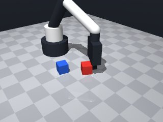
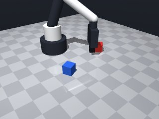
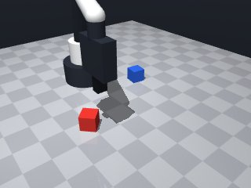
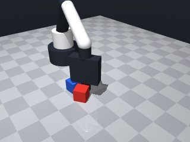
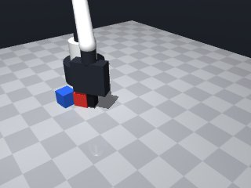
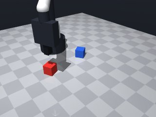

0 demonstrations · reward: gt · perception: real · 8 practice episodes in 1 rounds
Safety layer: 0 halts, 0 clamps.
| role | model | calls | tokens in | tokens out | USD |
|---|---|---|---|---|---|
| coder | nvidia/Nemotron-3-Ultra-550b-a55b | 1 | 1,606 | 946 | $0.0044 |
| summarizer | nvidia/Nemotron-3_5-Lightning | 0 | 0 | 0 | $0.0000 |
| compute | local | 76 s | $0.0000 | ||
| total | 1 | 1,606 | 946 | $0.0044 |
- First version for "Lift" task: pick up red cube and hold ≥5 cm above table. - Use observe() to locate red_cube, move to its xy at grasp height (z≈0.015), grasp, then lift to z≥0.05. - Account for perception noise: re-read pose after move, verify hold with robot.holding(), retry grasp once if needed. - Catch MotionError on moves; keep approach moves slow (0.08 m/s).
--- round_0/skill.py +++ round_1/skill.py @@ -0,0 +1,60 @@ +import math + +def run(robot): + # 1. Perceive scene + obs = robot.observe() + cube = obs["objects"].get("red_cube") + if not cube: + robot.log("red_cube not visible") + return False + + target_xy = cube["pos"][:2] + target_yaw = cube["yaw"] + + # 2. Move above cube, then down to grasp height + # Approach from above at safe speed + try: + robot.move_to(target_xy[0], target_xy[1], 0.10, yaw=target_yaw, speed=0.15) + # Descend to grasp height (cube center z=0.015, fingertips 1.25cm below tool point) + robot.move_to(target_xy[0], target_xy[1], 0.015, yaw=target_yaw, speed=0.08) + except Exception as e: + robot.log(f"Move failed: {e}") + return False + + # 3. Grasp with retry + held = False + for attempt in range(2): + robot.grasp() + robot.wait(0.2) # let grasp settle + if robot.holding() == "red_cube": + held = True + break + # Re-perceive and re-approach slightly + obs = robot.observe() + cube = obs["objects"].get("red_cube") + if cube: + target_xy = cube["pos"][:2] + target_yaw = cube["yaw"] + try: + robot.move_to(target_xy[0], target_xy[1], 0.015, yaw=target_yaw, speed=0.05) + except Exception: + pass + + if not held: + robot.log("Failed to grasp red_cube") + return False + + # 4. Lift to at least 5 cm above table (z >= 0.05) + try: + robot.move_to(target_xy[0], target_xy[1], 0.08, yaw=target_yaw, speed=0.10) + except Exception as e: + robot.log(f"Lift failed: {e}") + return False + + # 5. Verify still holding and height + final_obs = robot.observe() + if final_obs["gripper"]["holding"] == "red_cube" and final_obs["gripper"]["pos"][2] >= 0.05: + return True + + robot.log("Verification failed") + return False






import math
def run(robot):
# 1. Perceive scene
obs = robot.observe()
cube = obs["objects"].get("red_cube")
if not cube:
robot.log("red_cube not visible")
return False
target_xy = cube["pos"][:2]
target_yaw = cube["yaw"]
# 2. Move above cube, then down to grasp height
# Approach from above at safe speed
try:
robot.move_to(target_xy[0], target_xy[1], 0.10, yaw=target_yaw, speed=0.15)
# Descend to grasp height (cube center z=0.015, fingertips 1.25cm below tool point)
robot.move_to(target_xy[0], target_xy[1], 0.015, yaw=target_yaw, speed=0.08)
except Exception as e:
robot.log(f"Move failed: {e}")
return False
# 3. Grasp with retry
held = False
for attempt in range(2):
robot.grasp()
robot.wait(0.2) # let grasp settle
if robot.holding() == "red_cube":
held = True
break
# Re-perceive and re-approach slightly
obs = robot.observe()
cube = obs["objects"].get("red_cube")
if cube:
target_xy = cube["pos"][:2]
target_yaw = cube["yaw"]
try:
robot.move_to(target_xy[0], target_xy[1], 0.015, yaw=target_yaw, speed=0.05)
except Exception:
pass
if not held:
robot.log("Failed to grasp red_cube")
return False
# 4. Lift to at least 5 cm above table (z >= 0.05)
try:
robot.move_to(target_xy[0], target_xy[1], 0.08, yaw=target_yaw, speed=0.10)
except Exception as e:
robot.log(f"Lift failed: {e}")
return False
# 5. Verify still holding and height
final_obs = robot.observe()
if final_obs["gripper"]["holding"] == "red_cube" and final_obs["gripper"]["pos"][2] >= 0.05:
return True
robot.log("Verification failed")
return False